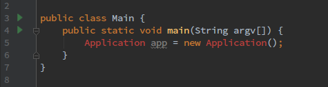
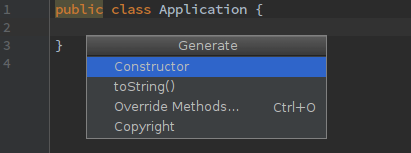
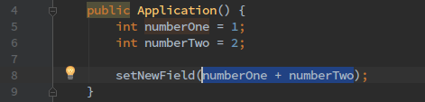
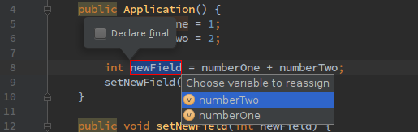
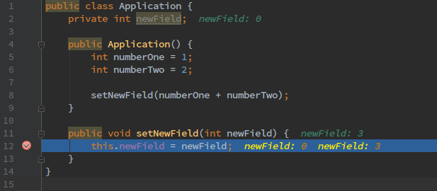
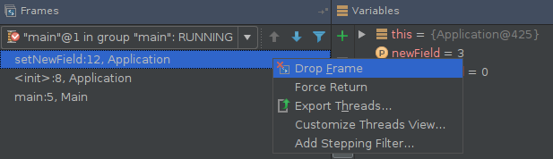

Have you ever wondered how to be more efficient while coding? For sure you’re using some kind of IDE, and while IDEA gets more and more popular it is highly probable that you’re actually using it already, but do you think you’re using it the hardcore way?
If you have a spare evening grab a beer and join me on an adventure! Let’s improve your productivity!
Invert your thinking
If you’re designing a new piece of code then you probably need to introduce new variables classes, field, methods, etc. Problem is that it’s really distracting and at the same time you probably had to struggle moving around in your editor, creating new class, naming it. Don’t do that, just write your code first! you’ll solve missing references later.
For example, if you want to use a new class, just write something like this:
Application app = new Application();
Now your IDE will probably complain about not knowing the class Application. Move your cursor to Application, press Alt+Enter and select “Create class Application”. Simple as that and you didn’t touch the mouse. Easy, fast, efficient!

After using shortcut:

Let’s generate!
I have to break it to you - our code is totally NOT unique in biggest part of it, sad but true. However - if it’s not unique, then maybe we can spare some time writing highly repeatable code? Let’s get to it!
Alright! You have your super fast, super clean coded, super newly created class! Have you started typing the following?
public Appl...
You guessed it - you don’t need to type constructor by hand - generate it! Place cursor inside Application class and press Alt+Insert select Constructor and that’s it! :)

The same way you can generate other things - go play with this menu, try overriding some methods.
By the way speaking of Alt+Insert - you can actually altinsert almost everything everywhere. Check what happens if you press it while having focus in project view - try creating some new files :)
Refactoring
Ok, we have a new class so we might want to introduce new fields, methods, etc. As stated above you can just write a code which uses not existing method and then press Alt+Enter and your IDE will guide you, so you can go check it out, but in this section I’d like to focus on refactoring superpowers.
Extracting variable
Remember a point about self-commenting variables from previous post? So here’s the simplest way to achieve that! There’s a magical shortcut: Ctrl+Alt+V, just select a code fragment you want to extract and press it, type your intuitive variable name and you’re done.
Before:

After:

Now you get the idea of extracting things, so you should definitely test variations of this shortcut like: Ctrl+Alt+F (new field), Ctrl+Alt+C (new constant), Ctrl+Alt+P (new parameter). I don’t want to describe everything here, I’m just teasing/inspiring you ;)
Apart from variety of variables you can also extract methods and actually it’s super-effective. Try selecting bunch of lines you feel that should go to other function, press Ctrl+Alt+M, give it a proper name (remember, remember, the clean code November) and you have your shiny new function - go drink a coffee, you deserved it!
Deep debugging
I guess you’re pretty tired of all those shortcuts, so this tip won’t be about any keyboard usage. Everyone had a chance to debug something, jumping between lines of code, inserting breakpoints, etc. You probably wonder - what can be improved in that? Well what if I tell you that you can delete the last execution frame a.k.a. go back in time to the point before function call? Look at the pictures below.
Here you are inside a function, and you for example went one line too far and want to start again.

In the Debug window you can select last frame, right click it and drop it. Boooom you’re in main function before calling setNewField method.

Summary
That’s all for today! I hope you’ve enjoyed those tips & tricks and I’m pretty sure they’ll come in handy after you master them :). However, there’s still much to learn my young padawan and for sure I’ll write more about utilising programmers’ tools to improve performance :)
Do you have any thrilling feature that I’ve missed and is a real time-saver for nerdy geeks like us? Share it in the comments and let me know! :) We all love shiny life and code hacks.
See you later!